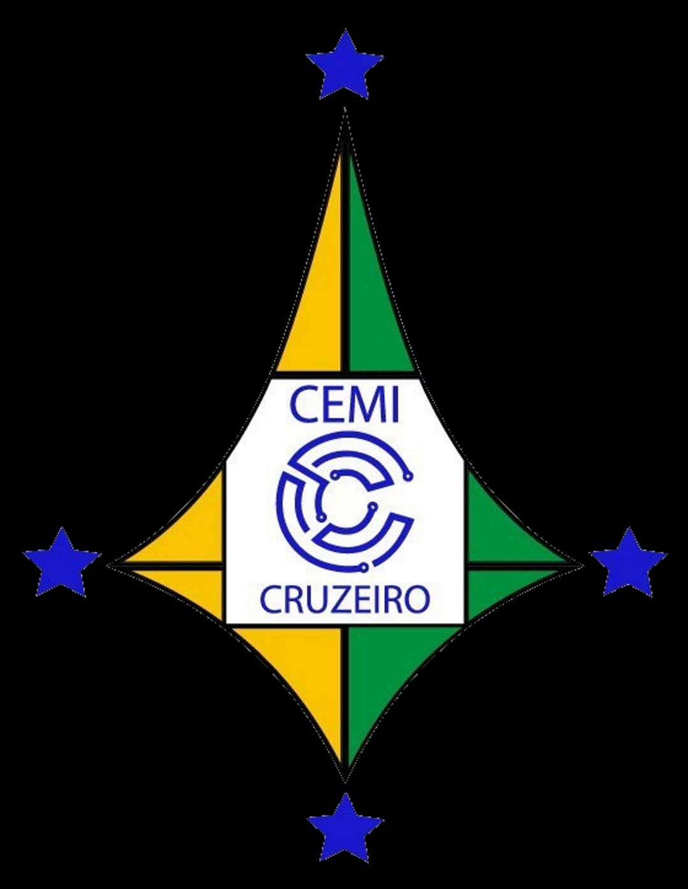

Centro de Ensino Médio Integrado do Cruzeiro (CEMIC)
Código do Trabalho: F20 labqui(SP)
O projeto de Carnicicultura visa criar camarões forrageiros de água doce para ajudar na limpeza de ecossistemas aquáticos. Nosso objetivo é promover práticas sustentáveis e oferecer soluções inovadoras para o setor de aquários e outras áreas ambientais.
O projeto Carnicicultura foi desenvolvido para resolver o problema de sujeira no lago sintético da escola (Projeto Cascata) por meio da introdução de camarões forrageiros, que auxiliam na limpeza e manutenção do ecossistema. Além de beneficiar a escola, o projeto visa estudar a capacidade desses camarões na manutenção da qualidade da água.
O projeto Carnicicultura começou com um aquário pequeno, onde os camarões foram inicialmente introduzidos para observar seu comportamento e a capacidade de limpar o ambiente. À medida que o projeto evoluiu, investimos em um aquário maior de 150 litros para proporcionar um ambiente mais adequado para os camarões, simulando condições mais próximas de um ecossistema real.
Além do aquário maior, também foi necessário adquirir uma bomba de água para garantir a circulação e oxigenação adequadas, plantas aquáticas para enriquecer o ambiente e iluminação apropriada para manter o bem-estar dos camarões e das plantas. Esses elementos foram fundamentais para criar um ecossistema equilibrado e sustentável.
Os membros do projeto se dedicaram intensamente, limpando e movendo o aquário por completo sempre que necessário. Esse esforço garantiu que o ambiente permanecesse limpo e saudável, contribuindo para o sucesso do experimento e para o aprendizado de todos os envolvidos sobre as demandas e cuidados de um ecossistema aquático.
Atualmente, o projeto Carnicicultura está bem estabelecido, com um aquário de 150 litros cheio de camarões forrageiros, diversas plantas aquáticas e até uma lagosta azul. A implementação dos camarões no lago sintético da escola, como parte do Projeto Cascata, tem sido um sucesso, contribuindo para a limpeza e manutenção da qualidade da água. Futuramente, planejamos expandir o projeto para incluir lagostas no lago, testando sua eficácia na limpeza do ecossistema e no equilíbrio natural. O trabalho realizado até agora demonstra o potencial desses crustáceos na manutenção de ambientes aquáticos, destacando a importância do projeto para o bem-estar ambiental da escola e para a formação científica dos alunos envolvidos.